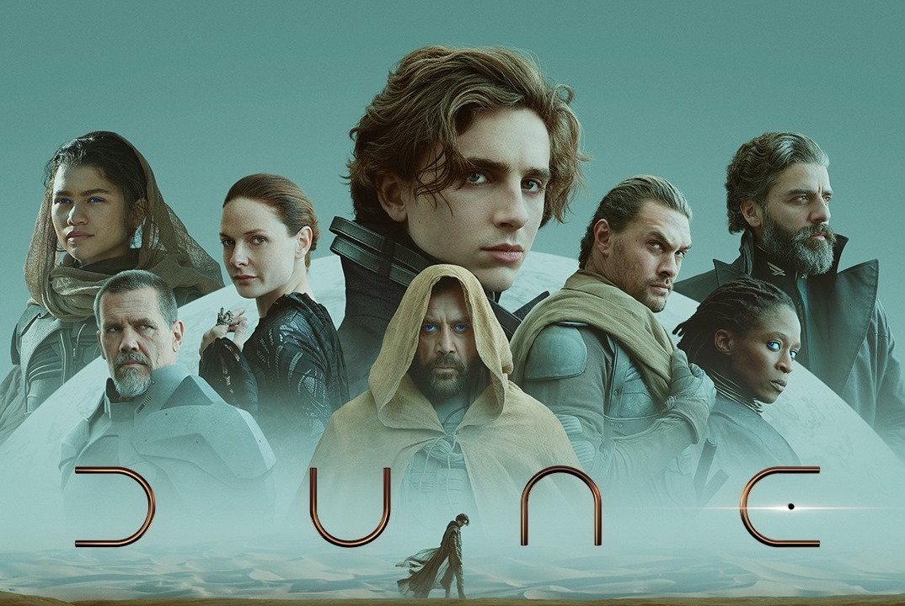

5. Dune, 2021
Regia di: Denis Villeneuve

In un distante futuro dell'umanità, il duca Leto Atreides accetta la gestione del pericoloso pianeta di Arrakis,
anche noto come Dune, l'unica fonte della sostanza più preziosa dell'universo, "la spezia", una droga che allunga la vita,
fornisce capacità mentali sovrumane e rende possibili i viaggi nello spazio. Nonostante Leto sappia che l'offerta è parte
di una complessa trappola creata dai suoi nemici, decide di partire per Arrakis, portando con sé la sua concubina Bene Gesserit
Lady Jessica, il giovane figlio ed erede Paul, e i suoi più fidati consiglieri. Leto prende il controllo di un'operazione
di estrazione della spezia, resa pericolosa dalla presenza di enormi vermi delle sabbie. Un amaro tradimento conduce Paul
e Jessica dai Fremen, nativi di Arrakis che vivono nel deserto più profondo.
Tra i 5 film è l'ultimo in ordine di uscita ma non per questo nettamente inferiore. Pellicola particolare e per certi versi oscura e lenta. Un posto nella nostra top 5 è d'obbligo anche grazie alla potenza d'immaginazione di un universo distopico in cui vengono trattati dei temi pressochè attuali.
Tra i 5 film è l'ultimo in ordine di uscita ma non per questo nettamente inferiore. Pellicola particolare e per certi versi oscura e lenta. Un posto nella nostra top 5 è d'obbligo anche grazie alla potenza d'immaginazione di un universo distopico in cui vengono trattati dei temi pressochè attuali.
Voto:7.5/10